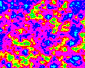

- * Grafikkarte
- * LAN-Karte
- * 3x UART extern, 1x UART "onboard" für Displays
- * 2 Anschlüsse für HD44780 Displays
Ausserdem sind drei Wannenstecker auf dem Board, welche zum durchreichen der Mainboard-Eigenen seriellen und paralellen Ports da sind.
Nach aussen sind auf dem Board 2x SUB-D9 und 1x SUB-D25. Nach innen gehen drei Flachbandkabel ab, die auf das Mainboard gesteckt werden, wo sonst die Brackets angeschlossen werden.
| 90° ISA Stecker |  die ganze "Karte" |
| Beschriftung |
Übersicht der Anschlüsse
Der Einfachheit halber, habe ich einen Ausschnitt der Fotos beschriftet:(click to enlarge)
VGA / Grafikkarte
Chipsatz: CHIPS F65545 B2RAM: 1024kB (2x 256kx16)
Interface zum PC: 16Bit ISA, zum Display: LVDS
VGA BIOS: "Universal VESA VBE 6.5", 32kB
Das verbaute Display unterstützt nur 800x600 bei 16 Farben. Andere Video-Modes werden in der Anzahl der Farben begrenzt und nur in einem Ausschnitt des Displays dargestellt.
Foto 640x480x4 Windows 3.1
Foto 80x25 Text BIOS
Foto 800x600x4 Testprogramm von mir (DOS)
Leider hat die Displaybeleuchtung auf diesen Fotos immernoch eine Macke. Ich muss diese, denke ich, ersetzen.
Rechts vom Display-Chip befindet sich eine 10-polige Stiftleiste. Diese ist für einen SUB-D 15 VGA Stecker um einen normalen Bildschirm anzuschliessen. Im "Slotblech" befindet sich auch eine Aussparung für so einen Stecker.
Ein schnell gebauter VGA-Anschluss funktionierte auf Anhieb. Das Bild ist eine 1:1 Kopie des LVDS Displays.
Merkwürdig... Der VGA Bildschirm zeigt den selben Effekt wie das Display - das Bild ist links mittig ausgerichtet...
Ich denke das VGA-BIOS ist auf das notwendigste reduziert...
Das schreit nach weiteren Ermittlungen!
| Pinbelegung des VGA-Headers | selbstgebauter VGA-Anschluss |
|
| l->r: LVDS Display, 2x HD44780 | Beschaltung des Video Chips, nahezu wie Beispiel im Datenblatt | 1MB Video RAM |
LAN
Die Netzwerkkarte ist eine SMSC91C94 und funktioniert tadellos mit dem Linux-Treiber. Die IO, IRQ und Memory Einstellungen dürften gängige sein, da der Linux-Treiber die Karte, ohne Konfiguration, auf Anhieb findet.Adresse 0x300
IRQ 3
Mem 0xD0000
(click to enlarge)
UARTs
Adresse:(click to enlarge)
HD44780
Einer der UARTs (#_) geht zu einem PIC_____. Dieser Mikrocontroller steuert bis zu zwei HD44780 Displays.Der Kontrast wird noch über zwei Potis eingestellt, was etwas umstänlich ist. Eine einfache PWM und ein RC-Netzwerk reichen ja schon um das in Software zu machen :(